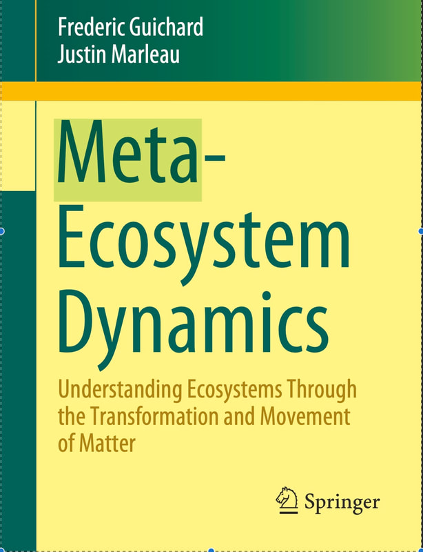

Publications
Books

::: {}- Guichard, F. and Marleau, J. (2021) Meta-ecosystem Dynamics. Lecture Notes on Mathematical Modelling in the Life Sciences. Springer. Link
:::
Journal Articles
In press / 2026
Lauzon, F., Carrier-Belleau, C., Boucher-Fontaine, J., Archambault, P., Cusson, M., Guichard, F. (2026) Dynamic response of communities and ecosystem functions to ecosystem engineering and multiple stressors in a marine mussel bed. Oikos, in press.
Guichard, F., Pichon, B., Gounand, I. (2026) The dual role of detritus as resource and habitat: integrating non-trophic processes to ecosystem dynamics. Oikos, in press. Preprint
Peller, T., Gounand, I., Fortin, M-J., Guichard, F. (2026) Spatially-nested topologies stabilize meta-ecosystems via cross-scale source-sink dynamics. Ecology, in press.
Carrión, P.L., Beausoleil, M-O., Raeymaekers, J.A.M., De León, L.F., Chaves, J.A., Sharpe, D.M.T., Huber, S.K., Herrel, A., Gotanda, K.M., Koop, J.A.H., Knutie, S.A., Clayton, D.H., Podos, J., Barrett, R.D.H., Guichard, F., Hendry, A.P. (2026) Darwin’s finches and climate change: insights from a resilient system. Journal of Evolutionary Biology 139(2): 281–293.
2025
McGuinness, B., Weber, S.C., Guichard, F. (2025) Resource-use plasticity governs the causal relationship between traits and community structure in model microbial communities. PNAS 122(29): e2419275122. DOI
Townsend, D., Gouhier, T., Guichard, F. (2025) Aggregated dispersal reduces spatial synchrony but promotes instability and extinction risk. Oikos 2025: e11032. DOI
2024
Carrier-Belleau, C., Lauzon, F., Boucher-Fontaine, J., Tiegs, S., Cusson, M., Guichard, F., Nozais, C., Archambault, P. (2024) Interacting effects of local and global stressors on mussel beds and ecosystem functioning. Journal of Experimental Marine Biology and Ecology. DOI
Hutchison, C., Gravel, D., Guichard, F. (2024) A hybrid dynamical system approach to predicting the resilience of community dynamics with seasonal migrations under climate change. Theoretical Ecology 17: 143–154. DOI
Arumugam, R., Guichard, F., Lutscher, F. (2024) Early warning indicators capture catastrophic transitions driven by explicit rates of environmental change. Ecology. DOI
2023
Harvey, E., Marleau, J., Gounand, I., Leroux, S., Firkowski, C., Altermatt, F., Blanchet, G., Cazelles, K., Chu, C., D’Aloia, C., Donelle, L., Gravel, D., Guichard, F., McCann, K., Ruppert, J., Ward, C., Fortin, M.-J. (2023) A general meta-ecosystem model to predict ecosystem functions at landscape extents. Ecography 2023(11): 1–16. DOI
Peller, T., Guichard, F., Altermatt, F. (2023) The significance of partial migration for food-web and ecosystem dynamics. Ecology Letters 26(1): 3–22. DOI
2022
Xue, Z., Chindelevitch, L., Guichard, F. (2022) Supply-driven evolution: mutation bias and trait-fitness distributions can drive macro-evolutionary dynamics. Frontiers in Ecology and Evolution.
Peller, T., Marleau, J., Guichard, F. (2022) Traits affecting nutrient recycling by mobile consumers can explain coexistence and spatially-heterogeneous trophic regulation across a meta-ecosystem. Ecology Letters 25: 440–452. DOI
2021
Bani, R., Marleau, J.N., Fortin, M.-J., Daigle, R., Guichard, F. (2021) Dynamic larval dispersal can mediate the response of marine metapopulations to multiple climate change impacts. Oikos. DOI
Milne, R., Guichard, F. (2021) Coupled phase-amplitude dynamics in heterogeneous metacommunities. Journal of Theoretical Biology 523: 110676. DOI
Knight, N., Guichard, F., Altieri, A. (2021) A global meta-analysis of temperature effects on marine fishes. Global Ecology and Biogeography 30: 795–810. DOI
Arumugam, R., Lutscher, F., Guichard, F. (2021) Tracking unstable states: Ecosystem dynamics in a changing world. Oikos 130: 525–540. DOI
Dunstan, P., et al. (2021) Chapter 30: Developments in Management Approaches. In: United Nations, Second World Ocean Assessment.
Christofoletti, R., Gobin, J., Guichard, F., Schwindt, E., Sigwart, J. (2021) Chapter 7: Biogenic Reefs, Sandy, Muddy and Rocky Shore Substrates. In: United Nations, Second World Ocean Assessment.
2020
Peller, T., Andrews, S., Leroux, S., Guichard, F. (2020) From marine metacommunities to meta-ecosystems: examining the nature, scale and significance of resource flows in benthic marine environments. Ecosystems 24: 1239–1252. DOI
Marleau, J.N., Peller, T., Guichard, F., Gonzalez, A. (2020) Converting ecological currencies: energy, material, and information flows. Trends in Ecology and Evolution 35(12): 1068–1077. DOI
Arumugam, R., Guichard, F., Lutscher, F. (2020) Persistence and extinction dynamics driven by the rate of environmental change in a predator–prey metacommunity. Theoretical Ecology 13: 629–643. DOI
Hutchison, C., Guichard, F., Legagneux, P., Gauthier, G., Bêty, J., Berteaux, D., Fauteux, D., Gravel, D. (2020) Seasonal food webs with migrations: multi-season models reveal indirect species interactions in the Canadian Arctic tundra. Philosophical Transactions of the Royal Society A 378. DOI
2019
Brady, S.P., Bolnick, D.I., Angert, A.L., Gonzalez, A., Barrett, R.D.H., Crispo, E., et al. (2019) Causes of maladaptation. Evolutionary Applications 12: 1229–1242.
Massé-Jodoin, J., Guichard, F. (2019) Non-resource effects of foundation species on meta-ecosystem stability and function. Oikos 128(11): 1613–1632. DOI
Negrin Dastis, J., Milne, R., Guichard, F., Derry, A.M. (2019) Phenotype-environment mismatch in metapopulations — implications for the maintenance of maladaptation at the regional scale. Evolutionary Applications 12: 1475–1486.
Brady, S.P., et al. (2019) Understanding maladaptation by uniting ecological and evolutionary perspectives. The American Naturalist 194(4): 495–515.
Chuard, P., Johnson, M., Guichard, F. (2019) Ocean acidification causes mortality in the medusa stage of the cubozoan Carybdea xaymacana. Scientific Reports 9(1): 5622. DOI
Marleau, J., Guichard, F. (2019) Meta-ecosystem processes alter ecosystem function and can promote herbivore-mediated coexistence. Ecology 100(6): e02699. DOI
D’Aloia, C.C., et al. (2019) Coupled Networks of Permanent Protected Areas and Dynamic Conservation Areas for Biodiversity Conservation under Climate Change. Frontiers in Ecology and Evolution 7: 27.
Guichard, F., Zhang, Y., Lutscher, F. (2019) The emergence of phase asynchrony and frequency modulation in metacommunities. Theoretical Ecology 12: 329. DOI
Paquette, L., Archambault, P., Guichard, F. (2019) From habitat geometry to ecosystem functions in marine mussel beds. Marine Ecology Progress Series 608: 149–163.
Bani, R., Fortin, M.-J., Daigle, R., Guichard, F. (2019) Dispersal traits interact with dynamic connectivity to affect metapopulation growth and stability. Theoretical Ecology 12: 111. DOI
2018
Hutchison, C.L., Gravel, D., Guichard, F., Potvin, C. (2018) Effect of diversity on growth, mortality, and loss of resilience to extreme climate events in a tropical planted forest experiment. Scientific Reports 8(1): 15443. DOI
Xuereb, A., et al. (2018) Marine Conservation and Marine Protected Areas. In: Oleksiak M.F., Rajora O.P. (eds.), Population Genomics: Marine Organisms. Springer.
2017
Pedersen, E.J., Stanley, R., Snelgrove, P., Guichard, F. (2017) Experimental evidence for concentration-dependence and intraspecific variation of movement behaviour in American lobster larvae. Canadian Journal of Zoology 95: 759–770.
Guichard, F. (2017) Recent advances in metacommunities and meta-ecosystem theories. F1000 Research 6: 610.
Pedersen, E.J., et al. (2017) Signatures of the collapse and incipient recovery of an overexploited marine ecosystem. Royal Society Open Science 4: 170215.
Guichard, F. (2017) Regular patterns link individual behavior to population persistence. PNAS 30: 7747–7749.
D’Aloia, C.C., et al. (2017) A multiple-species framework for integrating movement processes across life stages into the design of marine protected areas. Biological Conservation 216: 93–100.
2016
Eger, A., Curtis, J.M.R., Fortin, M.-J., Côté, I.M., Guichard, F. (2016) Transferability and scalability of species distribution models. Canadian Journal of Fisheries and Aquatic Sciences 74: 766–778.
Lacoursière-Roussel, A., Bock, D.G., Guichard, F., McKinsey, C.W. (2016) Effect of shipping traffic on biofouling invasion success. Biological Invasions 18: 3681–3695.
Pedersen, E. and Guichard, F. (2016) At what scales does aggregated dispersal lead to coexistence? Oikos 125: 1677–1687.
Pedersen, E.G., Marleau, J.N., Granados, M., Moeller, H.V., Guichard, F. (2016) Non-hierarchical dispersal promotes stability and resilience in a tri-trophic metacommunity. The American Naturalist 187(5): E116–E128.
Spiecker, B., Gouhier, T.C., Guichard, F. (2016) Reciprocal feedbacks between spatial subsidies and reserve networks in coral reef meta-ecosystems. Ecological Applications 26: 264–278.
2015
Xue, Z., Guichard, F., Costopoulos, A. (2015) A trait-based framework for mutation bias as a driver of long-term evolutionary trends. Complexity 21(5): 331–345.
Zhang, Y., Lutscher, F., Guichard, F. (2015) The effect of predator avoidance and travel time delay on the stability of predator-prey metacommunities. Theoretical Ecology 8(3): 273–283.
Marleau, J., Guichard, F., Loreau, M. (2015) Emergence of nutrient colimitation through movement in stoichiometric metaecosystems. Ecology Letters 18: 1163–1173.
Kerr, K., Collins, R., Guichard, F. (2015) Planktonic predation risk: effects of diel state, season and prey life history stage. Journal of Plankton Research 37: 452–461.
Le Corre, N., Guichard, F., Johnson, L.E. (2015) Patterns and scales of metapopulation connectivity. Ecology 96: 2245–2256.
Zhang, Y., Lutscher, F., Guichard, F. (2015) How robust is dispersal-induced spatial synchrony? Chaos 25(3): 036402.
2014
Xue, Z., Kaznatcheev, A., Costopoulos, A., Guichard, F. (2014) Fidelity drive: a mechanism for chaperone proteins to maintain stable mutation rates in prokaryotes. Journal of Theoretical Biology 364: 162–167.
Gounand, I., Mouquet, N., Canard, E., Guichard, F., Hauzy, C., Gravel, D. (2014) The paradox of enrichment in metaecosystems. The American Naturalist 184: 752–763.
Kerr, K., Christy, J., Joly-Lopez, Z., Luque, J., Collin, R., Guichard, F. (2014) Reproducing on time when temperature varies: shifts in the timing of courtship in fiddler crabs. PLoS One. DOI
Gouhier, T.C. and Guichard, F. (2014) Synchrony: quantifying variability in space and time. Methods in Ecology and Evolution 5: 524–533.
Kerr, K.A., Cornejo, A., Guichard, F., Collin, R. (2014) Planktonic predation risk varies with prey life history stage and diurnal phase. Marine Ecology Progress Series 503: 99–109.
Guichard, F. and Gouhier, T.C. (2014) Non-equilibrium ecological dynamics across spatial and temporal scales. Mathematical Biosciences 255: 1–10.
Marleau, J.N., Guichard, F., Loreau, M. (2014) Meta-ecosystem dynamics and functioning on finite spatial networks. Proceedings of the Royal Society B 281(1777): 20132094.
2013
Gouhier, T.C., Guichard, F., Menge, B.A. (2013) Designing effective marine reserve networks for non-equilibrium metacommunities. Ecological Applications 23: 1488–1503.
Wall, E., Guichard, F., Humphries, A.R. (2013) Synchronization in ecological systems by weak dispersal coupling with time delay. Theoretical Ecology 6: 405–418.
Le Corre, N., Martel, A.L., Guichard, F., Johnson, L.E. (2013) Variation in recruitment: differentiating the roles of primary and secondary settlement of blue mussels. Marine Ecology Progress Series 481: 133–146.
Loreau, M., Daufresne, T., Gonzalez, A., Gravel, D., Guichard, F., et al. (2013) Unifying sources and sinks in ecology, evolution and Earth sciences. Biological Reviews. DOI
2012
Lacoursière-Roussel, A., McKindsey, C.W., Bock, D., Cristescu, M., Guichard, F., et al. (2012) Disentangling invasion processes in a dynamic shipping-boating network. Molecular Ecology 21: 4227–4241.
Lacoursière-Roussel, A., Forrest, B.M., Guichard, F., Piola, R.F., McKindsey, C.W. (2012) Modeling biofouling from boat and source characteristics. Biological Invasions 14: 2301–2413.
Kerr, K.A., Christy, J.H., Collin, R., Guichard, F. (2012) Reducing error in reproductive timing caused by temperature variation. Marine Ecology Progress Series 459: 1–16.
Pillai, P. and Guichard, F. (2012) Competition-colonization trade-offs, competitive uncertainty, and the evolutionary assembly of species. PLoS One 7(3): e33566.
Puebla, O., Bermingham, E., Guichard, F. (2012) Pairing dynamics and the origin of species. Proceedings of the Royal Society B 279: 1085–1092.
Largaespada, C., Guichard, F., Archambault, P. (2012) Meta-ecosystem engineering: Nutrient fluxes reveal intra-specific and inter-specific feedbacks in fragmented mussel beds. Ecology 93: 324–333.
2011
Xue, J.Z., Costopoulos, A., Guichard, F. (2011) Choosing fitness-enhancing innovations can be detrimental under fluctuating environments. PLoS One 6(1): e26770.
Gravel, D., Hochberg, M., Guichard, F. (2011) Species coexistence in a variable world. Ecology Letters 14(8): 828–839.
Gravel, D., Canard, E., Guichard, F., Mouquet, N. (2011) Persistence increases with diversity and connectance in trophic metacommunities. PLoS One 6(5): e19374.
2010
Marleau, J., Guichard, F., Mallard, F., Loreau, M. (2010) Nutrient flows between ecosystems can destabilize simple food chains. Journal of Theoretical Biology 266: 162–174.
Gravel, D., Mouquet, N., Loreau, M., Guichard, F. (2010) Patch dynamics, persistence and species coexistence in metaecosystems. The American Naturalist 176: 289–302.
Bailey, K.M., et al. (2010) Comparative analysis of marine ecosystems: workshop on predator-prey interactions. Biology Letters 6(5): 579–581.
Gouhier, T.C., Guichard, F., Menge, B.A. (2010) Ecological processes can synchronize marine population dynamics over continental scales. PNAS 107: 8281–8286.
Anand, M., Gonzalez, A., Guichard, F., Kolasa, J., Parrott, L. (2010) Ecological systems as complex systems: challenges for an emerging science. Diversity 2(3): 395–410.
Gravel, D., Guichard, F., Loreau, M., Mouquet, N. (2010) Source and sink dynamics in metaecosystems. Ecology 91: 2172–2184.
Gouhier, T.C., Guichard, F., Gonzalez, A. (2010) Synchrony and stability of food webs in metacommunities. The American Naturalist 175: E16–E34.
2009 and earlier
Puebla, O., Bermingham, E., Guichard, F. (2009) Estimating dispersal from genetic isolation by distance in a coral reef fish. Ecology 90: 3087–3098.
Smith, G.K., Guichard, F., Petrovic, F., McKindsey, C. (2009) Using spatial statistics to infer scales of demographic connectivity between populations of the blue mussel. Limnology and Oceanography 54(3): 970–977.
Puebla, O., Bermingham, E., Guichard, F., Whiteman, E. (2007) Colour pattern as a single trait driving speciation in Hypoplectrus coral reef fishes? Proceedings of the Royal Society B 274: 1265–1271.
Gouhier, T. and Guichard, F. (2007) Local disturbance cycles and the maintenance of heterogeneity across scales in marine metapopulations. Ecology 88(3): 647–657.
Tewfik, A., Guichard, F., McCann, K.S. (2007) Influence of acute and chronic disturbance on macrophyte landscape zonation. Marine Ecology Progress Series 335: 111–121.
Maser, G., Guichard, F., McCann, K.S. (2007) Weak trophic interactions and the balance of enriched metacommunities. Journal of Theoretical Biology 247: 337–345.
Guichard, F. (2005) Interaction strength and extinction risk in a metacommunity. Proceedings of the Royal Society B 272: 1571–1576.
Pascual, M. and Guichard, F. (2005) Criticality and disturbance in spatial ecological systems. Trends in Ecology and Evolution 20(2): 88–95.
Guichard, F., Levin, S.A., Hastings, A., Siegel, D. (2004) Toward a dynamic metacommunity approach to marine reserve theory. BioScience 54(11): 1003–1011.
Guichard, F. (2004) Competition landscapes: scaling up local biotic and abiotic processes in heterogeneous environments. Theoretical Population Biology 66: 101–111.
Guichard, F., Halpin, P., Allison, G., Lubchenco, J., Menge, B.A. (2003) Mussel disturbance dynamics: signatures of oceanographic forcing from local interactions. The American Naturalist 161(6): 889–904.
Pascual, M., Roy, M., Guichard, F., Flierl, G. (2002) Cluster size distributions: signatures of self-organization in spatial ecologies. Philosophical Transactions of the Royal Society B 357: 657–666.
Guichard, F., Bourget, E., Robert, J.-L. (2001) Scaling the influence of topographic heterogeneity on intertidal benthic communities. Marine Ecology Progress Series 217: 27–41.
Guichard, F., Bourget, E., Agnard, J.-P. (2000) High resolution remote sensing of intertidal ecosystems: a low-cost technique to link scale-dependent patterns and processes. Limnology & Oceanography 45(2): 328–338.
Guichard, F. and Bourget, E. (1998) Topographic heterogeneity, hydrodynamics, and benthic community structure: a scale-dependent cascade. Marine Ecology Progress Series 171: 59–70.